Page 1: Borgin & Burkes
Wanted Poster of an Azkaban Escapee
Relentlessly guarded by Dementors, Azkaban is a fortress prison for witches and wizards. The Dementors feed on every happy thought, leaving prisoners nothing more than an empty shell, devoid of hope, rendering escape nearly impossible.
Return to: Hogsmeade Village
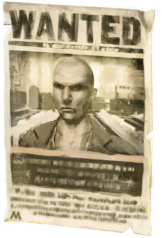
Vanishing Cabinet
A pair of Vanishing Cabinets allow for travel between two places. However, travel is only possible if both cabinets remain intact. Draco Malfoy famously used one to travel between Knockturn Alley and Hogwarts.
Return to: Room of Requirement
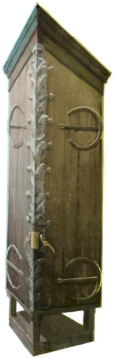
Hand of Glory
Best friend of thieves and plunderers, a Hand of Glory is a shriveled up hand that gives light only to the one who holds it, even in complete darkness.
Return to: Malfoy Manor
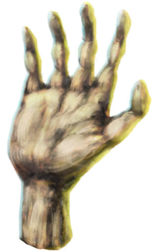
Flesh-Eating Slugs
Flesh-Eating Slugs are a breed of magical garden slugs, commonly found in Great Britain. Their mucus has a corrosive effect on the skin, and it is recommended to use a specialized repellent to deal with these pests.
Return to: Hogwarts Cabbage Patch
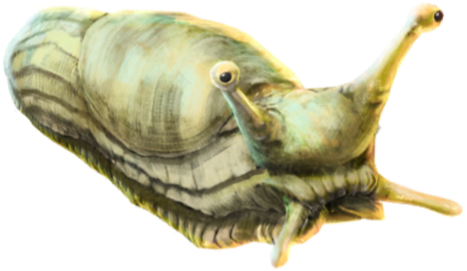
Magick Moste Evile
Magick Moste Evile was written by Godelot, one-time owner of the Elder Wand. Despite being a detailed exploration of the Dark Arts, it has no relevant information regarding Horcruxes. It will, however, emit a ghostly wail when slammed shut.
Return to: Hogwarts Library Restricted Section
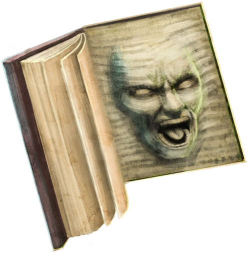
Page 2: Knockturn Alley
Knockturn Alley Sign
Neighboring the bustling marketplace of Diagon Alley, Knockturn Alley features niche stores that sell artefacts and supplies for Dark magic. Knockturn Alley has a reputation for being frequented by the less savoury members of the wizarding world.
Return to: Knockturn Alley
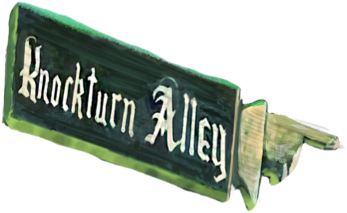
Thestral
Thestrals are gaunt, ghostly winged horses with leathery bat-like wings and reptilian facial features, invisible to all except those who have witnessed death. Excellent mounts, they can travel at incredible speed and cover vast distances.
Return to: The Forbidden Forest
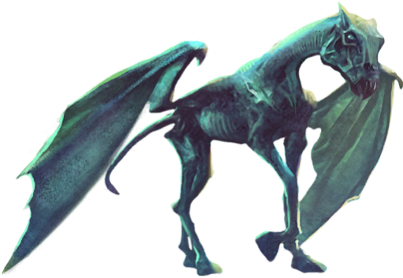
Ministry Executioner
Ministry Executioners are tasked with executing magical creatures that have been deemed too dangerous by the Ministry of Magic. Walden Macnair, a ministry executioner was famously tasked with the execution of Buckbeak the Hippogriff.
Return to: British Ministry of Magic
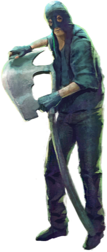
Portrait of Bellatrix Lestrange
Bellatrix Lestrange was one of Voldemort's most loyal and fanatical followers, known for her sadistic, unpredictable nature. Sentenced to life in prison at Azkaban for the torture of Alice and Frank Longbottom, she was killed at the Battle of Hogwarts.
Return to: Malfoy Manor
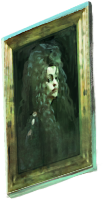
Swooping Evil
Swooping Evils are large flying magical creatures, and practice a form of encephalophagy - they are known to feed off of brains. It is recommended that only skilled magizoologists handle Swooping Evils.
Return to: Newt Scamander's Suitcase
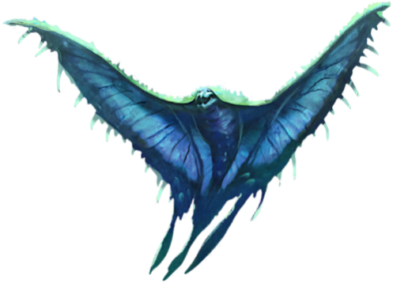
Hag
Hags are beings that feast on children and appear as very old, ugly witches. Possessing very rudimentary magic, hags have appeared in Muggle fairy tales as a wholly stereotypical and unenlightened depiction of a “witch”.
Return to: Russia
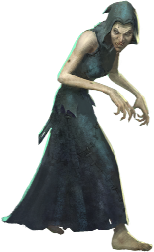
Page 3: Fallen Ministry Atrium
Magic is Might Statue
The Magic is Might statue, a tribute to blood purity within the wizarding world, replaced the Fountain of Magical Brethren in the Ministry's atrium during Lord Voldemort's brief reign. It depicted the superiority of wizards and witches over Muggles.
Return to: British Ministry of Magic Atrium
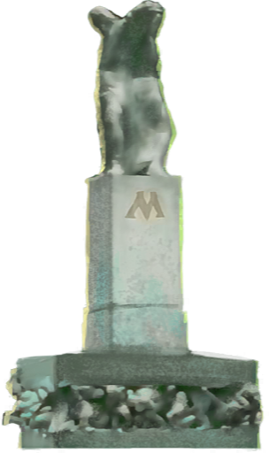
Tom Riddle Sr.'s Gravestone
Tom Riddle Sr. was buried in Little Hangleton graveyard after he was murdered by his son - Lord Voldemort. His bones were later exhumed and used in Lord Voldemort's resurrection.
Return to: Little Hangleton Graveyard
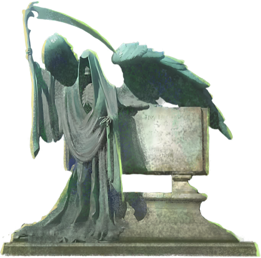
Percival Graves
A skilled Auror, Percival Graves was head of the Department of Magical Law Enforcement within the Magical Congress of the United States. In 1926, Graves was impersonated by Gellert Grindelwald.
Return to: MACUSA Auror Headquarters, 1926
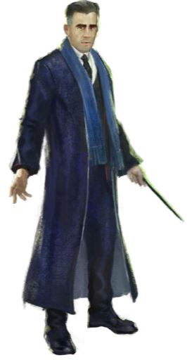
Tom Riddle
Tom Riddle's mother died shortly after giving birth to him at Wool's Orphanage. Albus Dumbledore recognized his magical potential and offered Tom a place at Hogwarts. The talented, disturbed youngster would grow up to become the notorious Lord Voldemort.
Return to: Professor Slughorn's Office, 1944
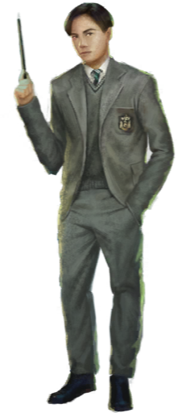
Portrait of Voldemort
Lord Voldemort was one of the most powerful and dangerous Dark wizards of all time, obsessed with finding the key to immortality. A portrait is regarded as only a representation of the living subject as seen by the artist.
Return to: Malfoy Manor
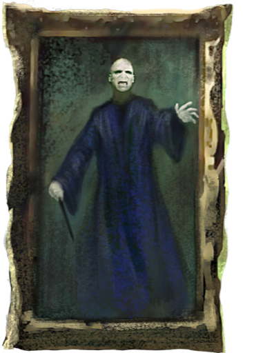